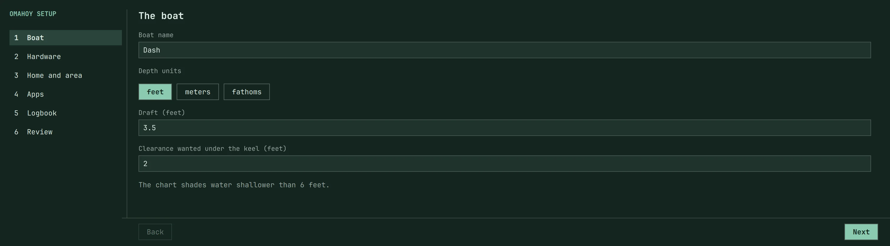
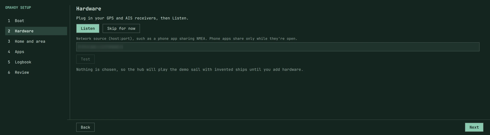
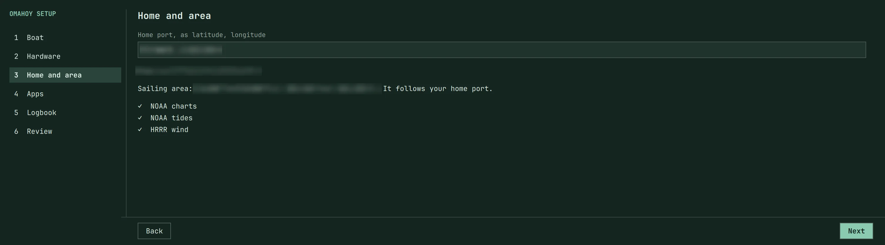
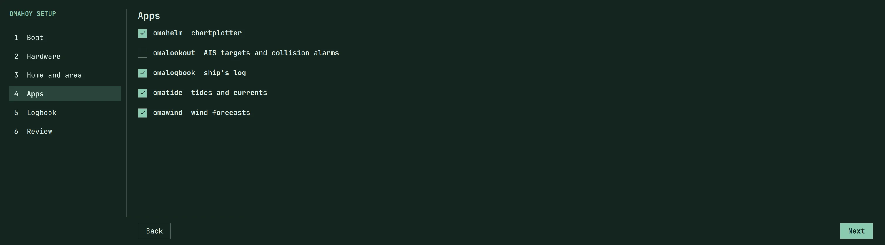
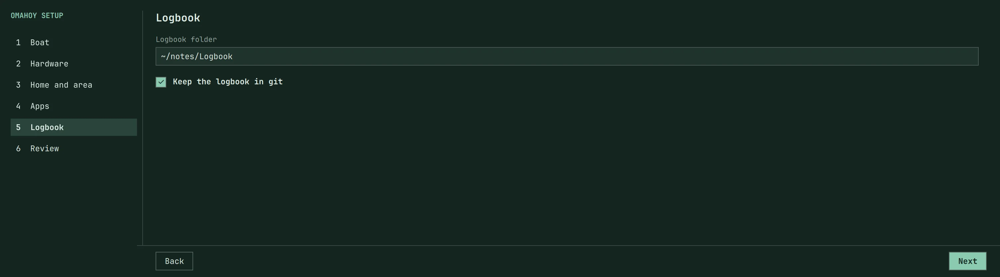
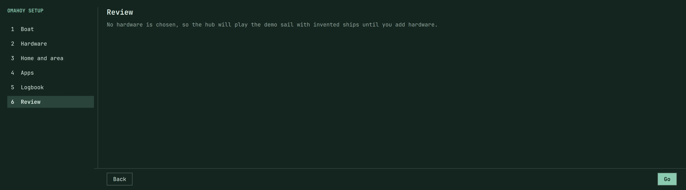
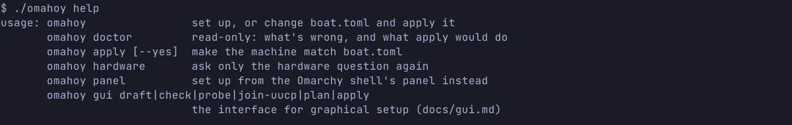
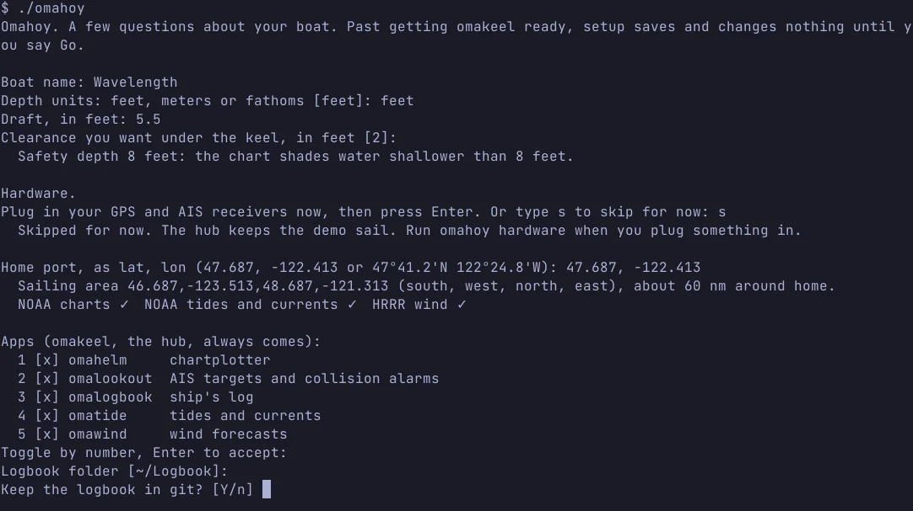
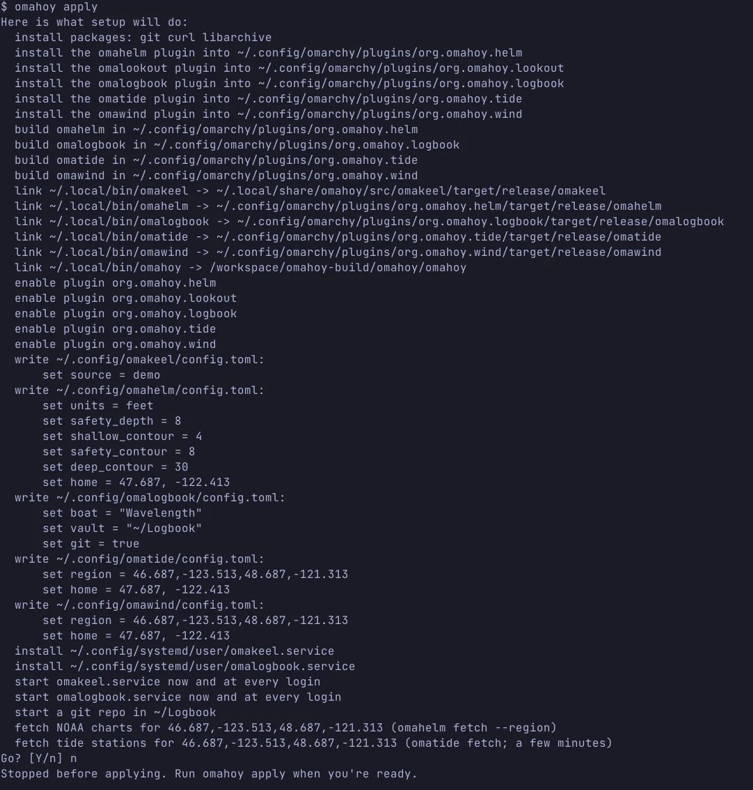
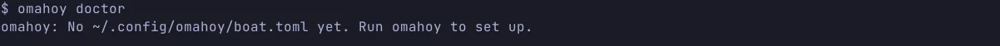

Getting startedearlyMIT
install
You need an Omarchy machine and an internet connection for the first run. Nothing else to install by hand: the ./omahoy bootstrap installs mise and the pinned Rust, then builds omahoy, which takes a few minutes the first time.
Clone the repo
From a terminal on the Omarchy machine:
$ git clone https://github.com/shieldsworks/omahoy && cd omahoy
Both the setup panel and the terminal path ask the same questions, then show a plan and wait for Go. Pick a path:
The setup panel
./omahoy panel opens an Omarchy panel that asks the same questions, with checkboxes for the apps, and installs them on Go. It links the plugin org.omahoy.setup to the checkout, enables it, and opens it. With the shell down it stops and says to start it.
$ ./omahoy panel
These six stills are a real run of that panel on an Omarchy machine on 11 Nov 2026, for Dash, stopped before Go. The home-port coordinates, the line that reads them back, the sailing-area bounds that follow that port, and a local network source were blurred: this site is public.





~/notes/Logbook, and whether to keep it in git. This page appears when omalogbook is chosen.
The terminal path
From the same checkout:
$ ./omahoy # questions in the terminal
./omahoy help lists the commands:

./omahoy help from the release binary, run on 11 Nov 2026.A real first run of ./omahoy, using the documented example boat Wavelength, stopped before Go:

./omahoy on 11 Nov 2026, using the documented example boat Wavelength, stopped before Go. Hardware was skipped with s, so the hub keeps the demo sail.Setup saves ~/.config/omahoy/boat.toml, then shows the plan:

omahoy apply on that same first-run boat.toml, 11 Nov 2026. Go was answered n, so nothing on the machine was applied. The ~/.local/bin/omahoy link in the plan points at the checkout this run was built from.This plan was captured on a machine that is not running Omarchy, so the checkout path is this build tree. On your Omarchy machine the link is to the clone you ran ./omahoy from.
The questions
Both paths ask, in this order: the boat’s name; depth units (feet, meters or fathoms); draft, and the clearance you want under the keel, both in those units; its GPS and AIS hardware (each receiver can be skipped for now; with none, the hub plays a demo sail); a network source, or Enter to skip; its home port and sailing area; and which apps to install. If you chose omalogbook, it also asks for the logbook folder (default ~/Logbook) and whether to keep it in git.
Before the hardware question, setup builds omakeel once if it isn’t already built, so it can listen for a GPS. Past that, setup saves and changes nothing until you say Go.
The plan, then Go
When you say go it:
- installs the packages the apps need,
- clones and builds each chosen app, plus omakeel, the hub, which is always installed,
- adds and enables the Omarchy plugins, in
~/.config/omarchy/plugins, with omakeel’s checkout in~/.local/share/omahoy/src/omakeel, - links the binaries into
~/.local/bin, - writes each app’s config from your answers, which it keeps in
~/.config/omahoy/boat.toml, - downloads charts and tides for your sailing area,
- and starts their services.
Installing packages and adding you to the uucp group (so the hub can read serial GPS and AIS receivers) need your password: sudo asks in the terminal, and a polkit dialog asks from the panel. “No” applies nothing; omahoy apply picks it up later.
Afterwards
$ omahoy # boat.toml exists: show it, offer to change a section, then plan and apply $ omahoy doctor # read-only: what’s wrong, what apply would do; exit 1 if anything $ omahoy apply # make the machine match boat.toml; --yes skips the prompt $ omahoy hardware # re-run only the hardware question $ omahoy panel # set up from the Omarchy shell’s panel instead
omahoy doctor checks the machine against boat.toml and changes nothing. Before the first run it says so:

omahoy doctor with no boat.toml yet, 11 Nov 2026. That case exits 2.Run omahoy (or omahoy panel) again to change an answer or add an app, and omahoy hardware to add a receiver later. When apply finishes and omahelm was chosen, setup prints:
Open the chart: omarchy-shell shell toggle org.omahoy.helm {}
docs/onboarding.md has the details, including what setup writes into each app’s config.
Once it’s running
The six apps that run today have their own pages, with recordings of the real apps on omakeel’s sample sail (a replay, not a real track):
- omakeel, the data hub
- omahelm, the chartplotter
- omalookout, AIS targets
- omalogbook, the ship’s log
- omatide, tides and currents
- omawind, wind forecasts
The power, solar and local-AI plan for Dash is on the AI shed build plan.